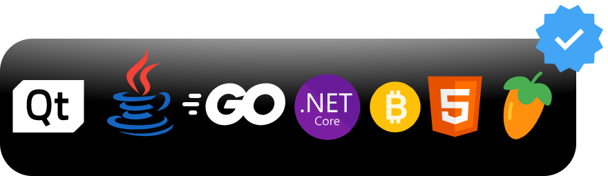
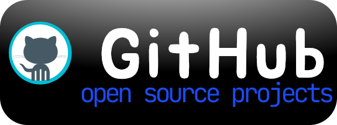
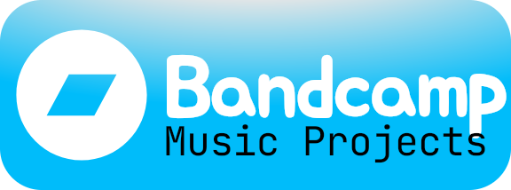
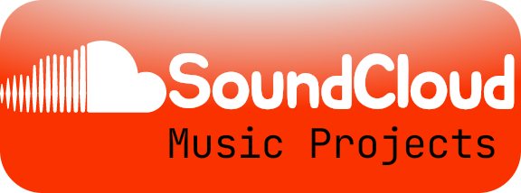

I'm Abraham, a software engineer focused on creating scalable, reliable, maintainable systems. I care about performance, accessibility, and pragmatic engineering. Below are a few highlights and recent projects, click Projects for details.



Experiment recreating desktop chrome and UX with modern web standards. Draggable windows, responsive layout, and accessible controls.
A Java(fx) application for handling bulk or complex file operations such as organizing, bulk-renaming, tree cloning, duplicate scanning and more. Available on Windows, Linux and Android
Collection of build-time and runtime optimizations tailored for SPAs and content-heavy sites.
A full-featured website with downloadable assets, dynamic grids and a free feedback service that writes to a spreadsheet.
A complete windows music player written in C#, powered by the BASS engine. Has a custom WinForms GUI
A browser extension that applies a nostalgic color filter and font to web pages (including images), available on Firfox (non-chromium) and Chromium browsers (Chrome, Edge, Opera, Brave etc)
A video frames extractor app for windows (WPF UI) that saves frames as images for later use or bulk upload.
A tiny, portable feedback and updates utility used by developers to avoid the overhead work of implementing a feedback page or updater. The tool is usually bundled with a release then called at runtime as a GUI or CLI session via --flags.
A tool to convert audio files into high quality lossless videos with a still image (upto 8k) in bulk or single files. Also has a feature to decrypt NCM (NetEase) music files [NCMDecryptor]
A simple, free URL Shortener
A mobile app that makes it easy to view your sourceforge projects stats on the go...no login, no ads.
A tiny go cli application to create or answer multichoice tests or gamified learning.
Summary: 6+ years building production web applications, tooling, and developer-focused features. Interested in systems engineering and developer UX.
Key Skills: Java, C#, Go, Web, linux, Qt, build systems, performance tuning, UI design.
Use the feedback page to get in touch with me.